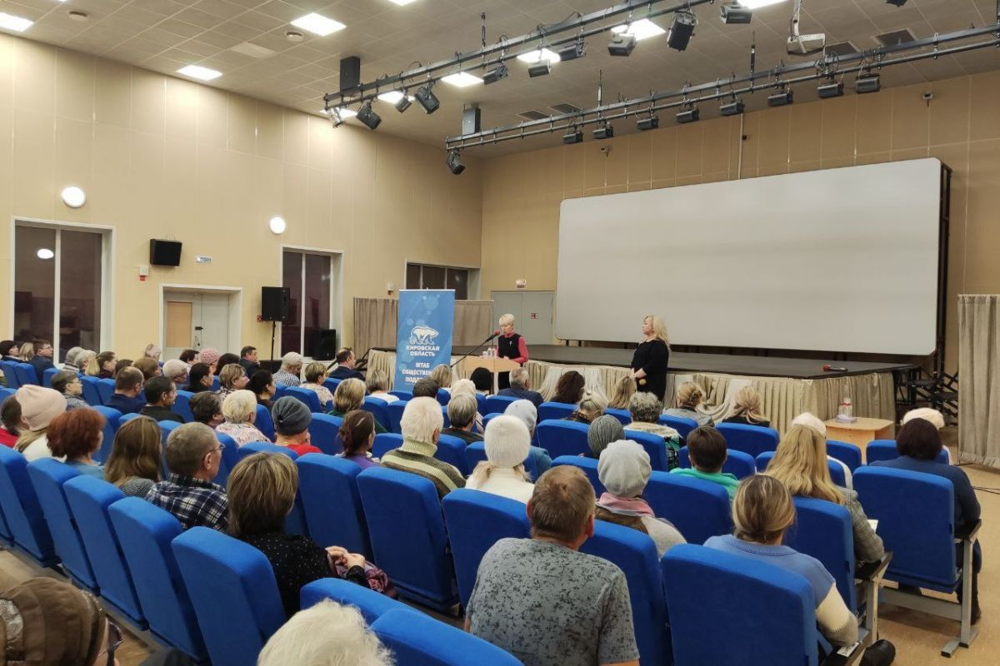
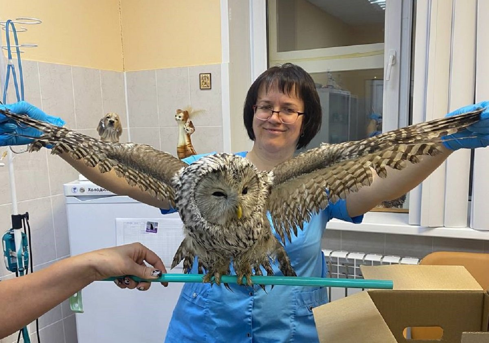
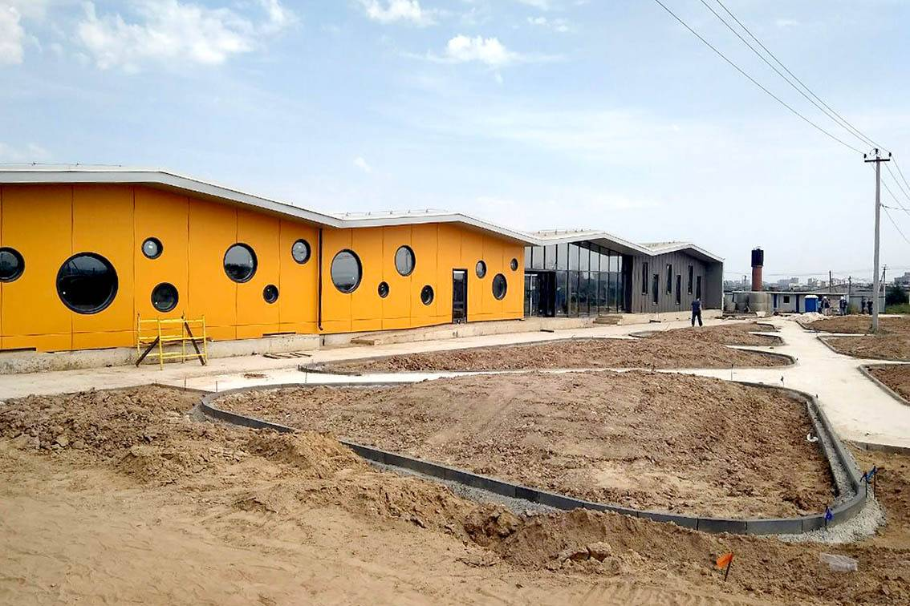

Новости и События

Образовательный Семинар
25 апреля 2023
Мы провели семинар для местных жителей о важности сохранения дикой природы и ответственном отношении к животным.
Подробнее

Спасение Редкого Вида
12 марта 2023
Наша команда успешно спасла и реабилитировала редкий вид сов, обнаруженных в лесной зоне.
Подробнее

Новое Строительство Приюта
15 мая 2023
Началось строительство нового приюта для животных, которое позволит улучшить условия и повысить количество спасенных животных.
Подробнее
Партнерство с Местной Школой
30 июня 2023
Мы запустили совместную программу с местной школой, направленную на обучение детей уходу за животными и экологии.
Подробнее